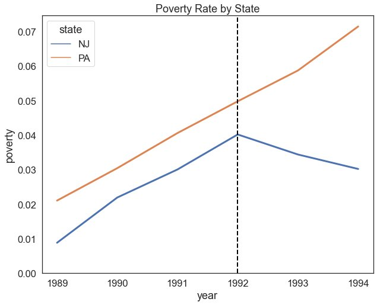
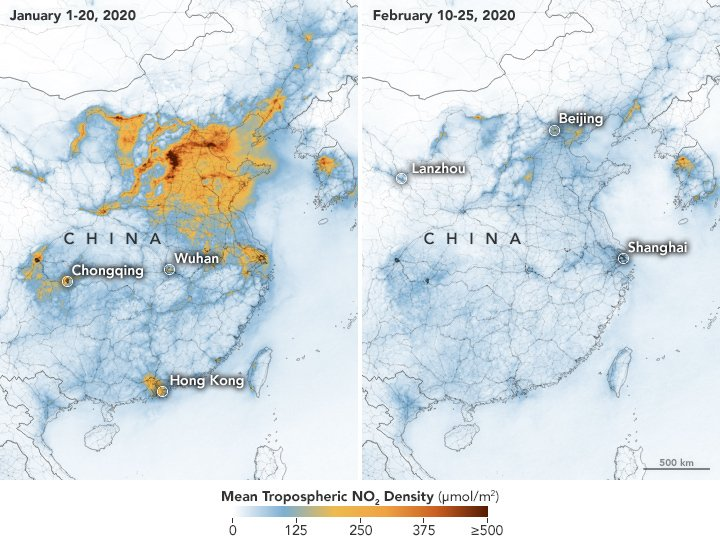
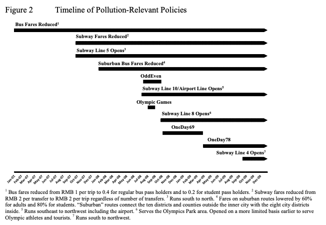
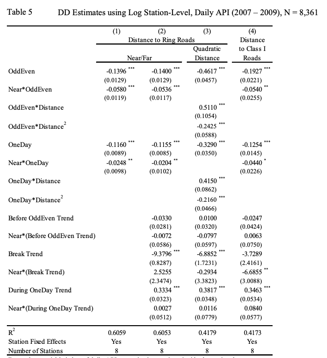

Causal Inference I: Difference-in-Differences
BASC0005 Quantitative Methods 2: Data Science and Visualisation
Ollie Ballinger
Outline
- Panel Regression
- Case Study 1: The Mariel Boatlift
- Difference in Differences
- Case Study 2: Driving Bans in China
Panel Regression
Fixed-Effects Panel Regression
- Fixed effects are variables that are constant across individuals;
- E.g. sex or ethnicity for individuals
- Geographic size or terrain for countries/states
- These variables don’t change or change at a constant rate over time.
- They have fixed effects; in other words, any change they cause to an individual is the same.
Correlation vs. Causation
- Just because we observe a correlation between X and Y, we cannot say that X causes Y.
- We observe that broadly, as minimum wages increase over time, poverty decreases. Our regression returns statistically significant results. Why might we hesitate in saying for certain that increasing the minimum wage decreases poverty?
- Endogeneity
- Occurs when the independent variable X is correlated with the error term e.
Endogeneity
- There are three main sources of endogeneity:
- Omitted Variables
- The relationship between X and Y is mediated by an unobserved variable Z.
- E.g. i run a regression between the percent of a district that is forest and the total number of crimes in a year. Massive negative effect. Do trees reduce crime?
- Simultaneity
- X causes Y, but Y also causes X. In its most extreme form, we might worry about reverse causality.
- E.g. If I run a panel regression across countries where x=poverty and y=conflict incidence, I’ll probably see a correlation. But does poverty cause war, or does war cause poverty, or both?
- Selection Bias
- The sample is not representative of the wider population.
- E.g. conducting phone interviews for political polling will probably overestimate conservative support because old people use landlines and tend to vote conservative.
- Omitted Variables
Experimental Designs
- To measure the causal effect of an intervention, we need to isolate its effect.
- In experimental settings, we can do this through randomization.
- But what about non-experimental settings?

Case Study 1: Immigration and Employment
Does immigration increase unemployment
- Many argue that immigration is undesirable because low-skilled immigrants may displace low-skilled or less-educated US citizens in the labor market.
- Anecdotal evidence for this claim includes newspaper accounts of hostility between immigrants and natives in some cities, but the empirical evidence is inconclusive.
- Card’s (1990) study of the effect of immigration on the employment of American citizens, using a Difference in Differences design and the Mariel Boatlift.

§
Experimental Design
- Data: Current Population Survey (CPS), same data we’ve been using in the workshops
- Treatment Group: Miami
- Control Group: Atlanta, Los Angeles, Houston, and Tampa-St. Petersburg. These cities were chosen because, like Miami, they have large Black and Hispanic populations and because discussions of the impact of immigrants often focuses on the consequences for minorities. Most importantly, these cities appear to have employment trends similar to those in Miami at least since 1976.
- Treatment period: pre/post 1980
Results
- Between 1981 and 1979, the unemployment rate for Blacks in Miami rose by about 1.3%, though this change is not significant.
- Unemployment rates in the comparisons cities rose even more, by 2.3%. The difference in these two changes, − 1.0%, is a DD estimate of the effect of the Mariel immigrants on the unemployment rate of Blacks in Miami.
- In this case, the estimated effect on the unemployment rate is actually negative, though not significantly different from zero.
Findings
- The Mariel immigrants increased the Miami labor force by 7%, and the percentage increase in labor supply to less-skilled occupations and industries was even greater because most of the immigrants were relatively unskilled.
- The Mariel influx appears to have had virtually no effect on the wages or unemployment rates of less-skilled workers, even among Cubans who had immigrated earlier.
- The author suggests that the ability of Miami’s labor market to rapidly absorb the Mariel immigrants was largely owing to its adjustment to other large waves of immigrants in the two decades before the Mariel Boatlift.
Difference-in-Differences
What is Difference-in-Differences?
- Differences-in-differences strategies are simple panel-data methods applied to sets of group means in cases when certain groups are exposed to the causing variable of interest and others are not.
- This approach, which is transparent and often at least superficially plausible, is well-suited to estimating the effect of sharp changes in the economic environment or changes in government policy.
Counterfactuals
- Difference in differences requires a few things:
- A treatment located at a point in time
- Two distinct groups for which we have measurement pre-and post- treatment
- Parallel pre-treatment trends in the outcome variable y
- No simultaneous treatment occurring around our treatment of interest
- These allow us to construct a valid counterfactual:
- We can argue that the control group in the post-treatment period acts as a valid representation of the treatment group’s behaviour in the absence of treatment. We can thus interpret the difference between the two as the causal effect of the treatment.
Do Minimum Wages Decrease Poverty?
- A bill signed into law on November 1989 raised the federal minimum wage from $3.35 per hour to $3.8 effective April 1, 1990, with a further increase from $4.25 per hour to $5.05 on April 1, 1992.
- New Jersey experiences the wage increase but not in Pennsylvania.
- David and Krueger run two rounds of survey right before and after the rise.
Correlation versus Causation
- We cannot draw causal conclusions by observing simple before-and-after changes in outcomes, as factors other than the treatment may influence the outcome over time.
- E.g. New Jersey may have also implemented new social programmes, improved public transport, etc. which would also influence poverty.
- We cannot simply compare NJ and PA directly due to differences in unobservable characteristics between the states.
- E.g. geographic size, economic structure, population, governance, etc.
Do Minimum Wages Decrease Poverty?
| State | Year | Treatment | Post | Poverty |
|---|---|---|---|---|
| NJ | 1989 | 1 | 0 | 0.1 |
| NJ | 1990 | 1 | 0 | 0.2 |
| NJ | 1991 | 1 | 0 | 0.3 |
| NJ | 1992 | 1 | 1 | 0.25 |
| NJ | 1993 | 1 | 1 | 0.2 |
| NJ | 1994 | 1 | 1 | 0.15 |
| PA | 1989 | 0 | 0 | 0.2 |
| PA | 1990 | 0 | 0 | 0.3 |
| PA | 1991 | 0 | 0 | 0.4 |
| PA | 1992 | 0 | 1 | 0.5 |
| PA | 1993 | 0 | 1 | 0.6 |
| PA | 1994 | 0 | 1 | 0.7 |

Parallel Trends Assumption
- Treatment and control would have developed in the same way in the absence of treatment.
- We can provide suggestive evidence of this if we have data on pre-years.

Assessing Parallel Trends
- Visual Assessment (are pre-treatment trends parallel)
- Perform a placebo test using a fake treatment group. The fake treatment group should be a group that was not affected by the program. A placebo test that reveals zero impact supports the equal-trend assumption.
- Perform a placebo test using a fake outcome. A placebo test that reveals zero impact supports the equal-trend assumption.
- Perform the difference-in-differences estimation using different comparison groups. Similar estimates of the impact of program confirms the equal-trend assumption.
Case Study 2: Air quality and Driving Restrictions
Exercise
- Let’s think about how we would explore the relationship between air quality and driving restrictions in China.
- Seven Chinese cities have recently instituted driving bans; these cities are
- Tianjin, Nanchang, Hangzhou, Lanzhou, Guiyang, Chengdu, and Changchun
- Suppose we have some data on the daily amount of traffic in these cities, and some data on pollution
Air Quality Data
- Pollution dropped significantly during the coronavirus pandemic
- Air quality was measured using satellite-borne sensors of various pollutants such as Nitrogen Dioxide (NO2).

Omitted Variables
- Air quality metrics like AQI are closely related to other atmospheric variables like moisture and temperature.
- The restrictions came in to effect in July, when it tends to be hot and humid.
- Are cars the only source of air pollution?
Simultaneity

Selection Bias
- It has been argued that compositional changes in monitoring stations over time may reflect systematic government decisions to close stations in highly polluted places to improve air quality statistics with out actually improving air quality
- E.g. Andrews, S. Q. (2008). “Inconsistencies in Air Quality Metrics: ‘Blue Sky’ Days and PM10 Concentrations in Beijing,” Environmental Research Letters, 3, 1 – 14.
Driving Restrictions
- Viard and Fu, 2013
- Driving restrictions are used in numerous cities around the world to reduce pollution and congestion.
- Such restrictions may be ineffective either due to non-compliance or compensating responses such as inter-temporal substitution of driving or adding second vehicles.
- If effective, they may lower economic activity by increasing commute costs and reducing workers’ willingness to supply labor for given compensation.
Motivation
- There is little empirical evidence of driving restrictions’ effect on pollution and none about their effect on economic activity.
- We examine both effects under driving restrictions imposed by the Beijing government since July 20, 2008. The restrictions, based on license plate numbers, initially prevented driving every other day and later one day per week.
Experimental Design
- Question: What is the effect of driving restrictions on air quality in Beijing?
- Data: A panel dataset with daily measures of Beijing air pollution at the individual monitoring-station level, spanning January 1, 2007 to December 31, 2009.
- Treatment Group: Air quality monitoring stations near roads
- Control Group: Air quality monitoring stations far from roads
- Treatment period: After the implementation of the driving restriction.
Identifying Assumptions
- The identifying assumption for our DD estimation is that, conditional on the other covariates, station-specific unobserved factors affecting the API are uncorrelated with the treatment.
- That is, unobserved factors do not vary systematically with distance from a major road during the policy periods relative to before.
- This assumption may not hold if stations closer to a major road have different long-term pollution trends than those further away. This might be the case if, for example, traffic patterns changed differently over time on major roads relative to smaller roads.
Results
- The effects are highly significant with either a 45- and 60-day window showing declines of
- 12% and 19% for “far” stations
- 16% and 23% for “near” stations.
Detailed Results
Instead of just using a binary near/far cutoff, these results use continuous distance

Findings
- Pollution drops more at stations closer to a major road. This means confounding factors are related to proximity to a major road and therefore traffic flow. We consider, and rule out, changes in gasoline prices, parking rates, number of taxis, emissions standards, and government-imposed working hours.
- The OddEven policy reduces the API by 12.5%
- The OneDay policy reduces the API by 16.0%
Any Questions?
BASC0005 Quantitative Methods 2